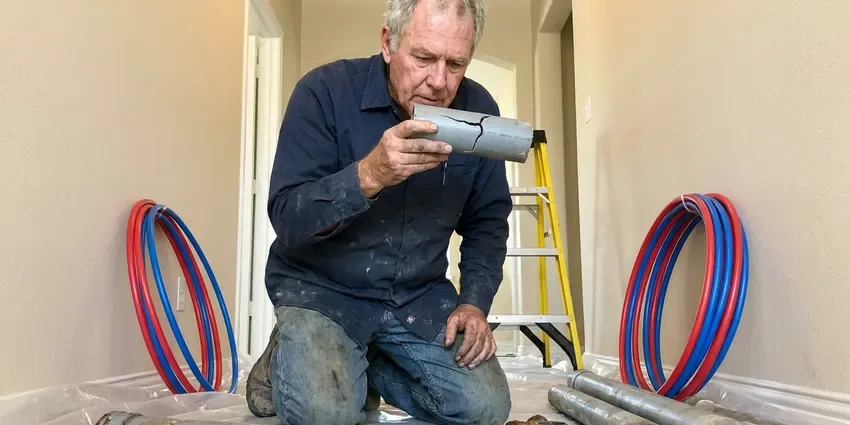

Well Pressure Tank Replacement in Valdosta, GA
Dealing with uneven water pressure or a constantly running well pump in Valdosta, GA? Our expert plumbers focus on efficient well pressure tank replacement.
- Skilled Plumbers
- Licensed & Insured
- Quality Tank Brands
- Fast, Local Service

Expert Well Pressure Tank Services in Valdosta, GA.
We check your pump, switch and wiring while we replace the tank.
Your Go-To for Well Pressure Tank Replacement in Valdosta, GA
HGR Plumbing replaces failed well pressure tanks with bladder and diaphragm tanks sized to your pump's gallons per minute. A properly sized tank gives the pump a run time of at least one minute per cycle, which keeps the motor cool and lengthens its life.
Our expertise includes:
- Handle well pump and pressure switch integration.
- Diagnose well pressure tank failures precisely.
- Air pre-charge adjustment and cycle time testing

Additional Plumbing Replacement Services in Valdosta, GA
When repairs are no longer enough, our replacement services in Valdosta, GA deliver modern, efficient equipment installed right.


Customers
Why Choose HGR Plumbing for Well Pressure Tank Replacement in Valdosta, GA?
When a pressure tank loses its air charge, the pump starts and stops dozens of times an hour, which overheats the motor and pits the switch contacts. Replacing a $600 tank on time can save a $3,000 pump pull.
- System Optimization, Our replacements focus on boosting your entire well system's efficiency and lifespan.
- Transparent Pricing, We provide clear, upfront estimates for all well pressure tank replacement services, so you know the cost before any work begins.
- Correct Sizing, We size the tank for drawdown so your pump runs a full minute each cycle.
Citywide Coverage
HGR Plumbing provides comprehensive well pressure tank replacement services across all neighborhoods of Valdosta. Whether you are in a rural area with a private well or a planned community, our technicians are dispatched efficiently.
Experienced Team
Each technician at HGR Plumbing is a specialist in well system components, including pressure tanks. Their solid knowledge ensures that your replacement is performed correctly, preventing future issues and improving your water supply.
Safety-First Approach
We take every precaution during the replacement process, from depressurizing the system to proper electrical disconnections. Our commitment to safety protects your home, your family, and our technicians throughout the service.
Trusted Certified Valdosta Plumbing Services Professionals
At HGR Plumbing, we take pride in providing certified plumbing services throughout Valdosta, GA. Backed by recognized industry credentials, our experienced plumbers combine technical skill with genuine customer care. Whether it is repair, installation, or maintenance, we follow strict safety and quality standards to deliver long-lasting results you can trust.
Call Us Now PHCC Plumbing Contractor Recognition
PHCC Plumbing Contractor Recognition Better Business Bureau (BBB) Accreditation
Better Business Bureau (BBB) Accreditation Angi Certified Pro
Angi Certified Pro ISO 9001 Quality Management Certification
ISO 9001 Quality Management CertificationReliable Well Pressure Tank Replacement Services in Valdosta, GA
Galvanized Steel Pressure Tank Upgrades in Valdosta
Many older homes in Valdosta still have traditional galvanized steel pressure tanks, which can corrode over time and lose their air charge. We offer professional upgrades from these older tanks to more modern and durable bladder-style tanks. This not only improves water pressure stability but also extends the life of your well pump by reducing short-cycling.

Pressure Switch Replacement in Valdosta, GA
The pressure switch tells the pump when to start and stop, typically at 30/50 or 40/60 psi. Pitted contacts, insect nests and a clogged sensing nipple are frequent causes of failure in well houses. We replace worn switches with Square D or similar models and clean or replace the nipple below it. A low-pressure cutoff switch can also be added to stop the pump if the well runs dry. We set the switch to suit your new tank's pre-charge.
Amtrol Pressure Tank Replacement in Valdosta
Amtrol is another leading manufacturer of well pressure tanks, offering a range of models suitable for different well system needs. If your existing Amtrol tank is failing, HGR Plumbing provides precise replacement services in Valdosta. We ensure that the new Amtrol tank is correctly integrated into your plumbing system, calibrated for optimal pressure, and tested for leak-free operation.
Bladder Pressure Tank Replacement in Valdosta
Bladder tanks hold water inside a flexible butyl bag surrounded by pressurized air. When the bag ruptures, water fills the whole tank, there is no air cushion and the pump short cycles. A quick test is pressing the air valve on top, since water spitting out means the bladder has failed. We replace the tank, set the new pre-charge and verify the pump runs a full cycle. Most bladder tank swaps take about two to three hours.
Commercial Well Pressure Tank Services in Valdosta, GA
Commercial properties in Valdosta with private well systems also rely on efficient pressure tanks for their water supply. HGR Plumbing offers specialized well pressure tank replacement services for commercial applications, understanding the higher demands and larger capacities often required. We work to limit downtime and disruption to your business operations, installing robust, commercial-grade tanks that can handle continuous heavy use and maintain consistent pressure across your facility, from irrigation to internal plumbing systems.
Diaphragm Pressure Tank Replacement in Valdosta, GA
Diaphragm tanks like the Amtrol Well-X-Trol use a fixed membrane that separates air above from water below. They are tough, but the steel shell can rust through at the base after years of condensation in a hot, damp equipment space. We replace corroded diaphragm tanks and check the stand and fittings under them. The new tank is leveled and supported so it does not stress the piping. This restores steady pressure to every faucet.
Large Capacity Tanks for Ranch and Commercial Wells in Valdosta
Properties with livestock, irrigation or more than one home on a well need more storage than a single residential tank. We install multiple tanks manifolded together or large capacity models over 100 gallons. Proper sizing keeps big three-phase pumps from cycling too often. We also check the check valves and pressure ratings on the distribution lines. Work is scheduled to keep water downtime brief for animals and occupants.

Constant Pressure System Conversion in Valdosta, GA
A constant pressure system pairs a variable speed drive like the Franklin SubDrive or Grundfos SQE with a smaller pressure tank. The pump speeds up or slows down to hold a set pressure, so showers do not fade when a sprinkler kicks on. These systems cost more, often $2,500 to $5,000, but they eliminate pressure swings. They also reduce hard starts on the motor. We explain whether your well and pump are good candidates.
Well Pressure Tank Replacement Near Me in Valdosta, GA
Our commitment to the Valdosta community means we are always ready to provide top-quality well pressure tank replacement services. You can count on HGR Plumbing for timely, professional service, delivered by experienced plumbers who know the specific challenges of well systems in Georgia.
If you are searching for well pressure tank replacement near me, quick local service can keep a short cycling problem from becoming a pump replacement. HGR Plumbing serves Valdosta with trucks stocked with tanks, switches and tank tees. Most jobs are finished the same day we arrive.
HGR Plumbing at a Glance
- Fully licensed plumbing team covering Valdosta, GA
- 24/7 emergency service with same-day scheduling
- Upfront, flat-rate pricing before work begins
- 4.9-star rated by 357+ Georgia customers
Valdosta Map
Valdosta Information
- Population
- 55,025
- Area codes
- 229/478/912
- Service area
- Valdosta and communities within 40 miles
- Nearby
- Albany, Brunswick, Warner Robins, Macon
Hard or sandy well water and hot equipment spaces wear out pressure tanks, so a correctly sized replacement protects the pump and keeps water consistent for homes in Valdosta, GA.
Expert Services
Trust our professionals for reliable HGR Plumbing solutions in Valdosta, GA.
Our Specialized Plumbing Services in Valdosta, GA
At HGR Plumbing, we provide a complete range of plumbing services across Valdosta, GA. From leak detection to full system installations, our team ensures fast, precise, and affordable service for both residential and commercial properties. Explore our core services below:


How Our Well Pressure Tank Replacement Process Works in Valdosta, GA
We keep pressure tank replacement efficient, tested and focused on protecting your pump.
Request a Quote
Call (770) 470-3778 or fill out our online form to schedule an appointment. We will discuss your well pressure tank issues and arrange for a qualified technician to visit your Valdosta home.
On-Site Assessment
Our technician will inspect your current well pressure tank and well system. They will diagnose the problem, explain their findings, and provide a clear quote for the replacement in Valdosta.
Expert Installation
Once approved, we will properly remove your old tank and install the new well pressure tank. We ensure proper sizing, connections, and system calibration for full performance.
Frequently Asked Questions About Well Pressure Tank Replacement in Valdosta
The cost for well pressure tank replacement in Valdosta, GA usually ranges from $700 to $1,800, depending on the tank size, brand, and complexity of the installation. This includes the tank itself, labor, and any needed fittings. We provide a detailed quote after assessing your specific system needs.
We install Amtrol Well-X-Trol, Flexcon and Water Worker tanks. All three are widely available and backed by solid manufacturer warranties.
Both bladder and diaphragm tanks use an air cushion to pressurize water, but they differ in how the water and air are separated. Bladder tanks have a replaceable rubber bladder that holds the water, fully isolating it from the air. Diaphragm tanks use a fixed rubber diaphragm. Bladder tanks are often preferred for their longevity and ease of maintenance.
Common signs include your well pump repeatedly turning on and off (short cycling), fluctuating water pressure, air sputtering from faucets, or a tank that is waterlogged (feels heavy when tapped and full of water). If you notice any of these, it is time for an inspection by a pro.
Yes, absolutely. A failing well pressure tank often causes the well pump to short-cycle, meaning it turns on and off too often. This constant starting and stopping puts heavy strain on the pump's motor, leading to premature wear and potential failure of the well pump itself.
We install a variety of proven well pressure tank brands, including Well-Rite, Flex-Lite, Amtrol, and Goulds. Our technicians can recommend the best brand and model for your specific well system and budget.
A typical well pressure tank replacement generally takes between 2 to 4 hours. This includes disconnecting the old tank, installing the new one, and testing the system to ensure proper operation and pressure settings.
A new well pressure tank mainly helps maintain consistent water pressure and reduces pump cycling. If your current low pressure is due to a failing or undersized tank, a replacement will definitely improve the consistency and feel of your water flow. However, if the issue is with the well pump itself or a clogged pipe, other solutions might be needed.
What People Are Saying About Our Plumbing Experts?

Laura S.
I scheduled a water heater replacement, and the team made the process smooth and affordable. The new unit works perfectly, and they cleaned up after completing the job.
Water Heater Replacement · Columbus, GA
Robert G.
The trenchless sewer replacement saved our front yard. They walked us through the camera inspection footage first so we knew exactly what we were paying for.
Sewer Line Replacement · Warner Robins, GASofia M.
Two new toilets installed in one visit, no mess left behind, and the tech even adjusted a faucet he noticed was dripping. Fair pricing and really friendly.
Toilet Installation · Macon, GA
Patricia H.
We had a slab leak that two other companies could not find. HGR Plumbing located it in under an hour, explained our options, and the price matched the quote to the dollar.
Slab Leak Repair · Macon, GAJames P.
Our commercial plumbing system had a leak under the sink, and HGR Plumbing handled it professionally. The plumbers arrived quickly and restored everything without disruption to our customers.
Commercial Plumbing · Macon, GA
Emily R.
I called HGR Plumbing for plumbing repair, and the technician was fast, polite, and thorough. They explained the problem clearly and fixed it the same day. I will definitely hire them again. Highly recommended!
Plumbing Repair · Valdosta, GA